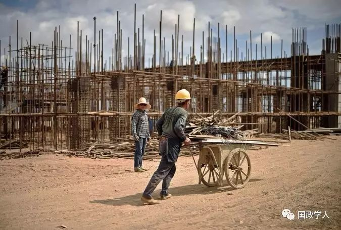
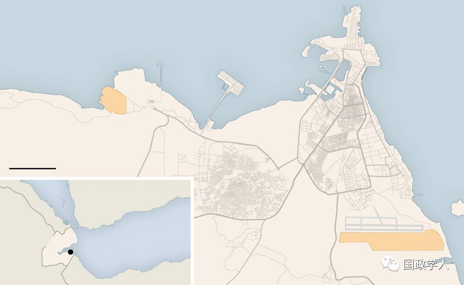

收录于合集

U.S. Wary of Its New Neighbor in Djibouti: A Chinese Naval Base 美国警惕在吉布提的新邻居：中国军事基地
By ANDREW JACOBS and JANE PERLEZ February 27, 2017

DJIBOUTI — The two countries keep dozens of intercontinental nuclear missiles pointed at each other’s cities. Their frigates and fighter jets occasionally face off in the contested waters of the South China Sea.
吉布提——这两个国家分别把数十枚洲际导弹对准对方的城市。它们的护卫舰和战斗机偶尔会在南海争议水域对峙。
With no shared border, China and the United States mostly circle each other from afar, relying on satellites and cybersnooping to peek inside the workings of each other’s war machines.
中国和美国没有共同的边境线，多数时候处于遥相周旋的状态，依靠卫星和网络侦听去窥探对方战争机器的内部运转情况。
But the two strategic rivals are about to become neighbors in this sun- scorched patch of East African desert. China is constructing its first overseas military base here — just a few miles from Camp Lemonnier, one of the Pentagon’s largest and most important foreign installations.
但这两个战略对手即将在这片被阳光炙烤的东非沙漠上成为邻居。中国正在这里建设自己的首个海外军事基地，距离五角大楼最大、最重要的海外基地之一莱蒙尼尔营(Camp Lemonnier)只有几英里。
With increasing tensions over China’s island-building efforts in the South China Sea, American strategists worry that a naval port so close to Camp Lemonnier could provide a front-row seat to the staging ground for American counterterror operations in the Arabian Peninsula and North Africa.
眼下正值中美关系因中国在南海造岛变得日益紧张，美国战略人士担心，一个离莱蒙尼尔营如此近的军港，可能会让美国在阿拉伯半岛和北非的反恐行动暴露在对方的眼皮子底下。
“It’s like having a rival football team using an adjacent practice field,” said Gabriel Collins, an expert on the Chinese military and a founder of the analysis portal China SignPost. “They can scope out some of your plays. On the other hand, the scouting opportunity goes both ways.”
“就像一支敌对的足球队正使用附近的训练场，”研究中国军事问题的专家、分析门户网站“洞察中国”(China SignPost)创始人高攻博(Gabriel Collins)说。“他们可以细细观察你们的表现。另一方面，窥探的机会是双向的。”
Established after the terror attacks of Sept. 11, 2001, Camp Lemonnier is home to 4,000 personnel. Some are involved in highly secretive missions, including targeted drone killings in the Middle East and the Horn of Africa, and the raid last month in Yemen that left a member of the Navy SEALs dead. The base, which is run by the Navy and abuts Djibouti’s international airport, is the only permanent American military installation in Africa.
莱蒙尼尔营建于2001年9月11日的恐怖袭击发生后，里面驻扎着4000人。其中一些人会参与高度机密的任务，包括在中东和非洲之角的无人机定点清除行动，以及上月在也门的一场导致一名海豹突击队队员丧生的突袭行动。莱蒙尼尔营的运转由美国海军负责，毗邻吉布提的国际机场，是美国在非洲的唯一永久性军事设施。
Beyond surveillance concerns, United States officials, citing the billions of dollars in Chinese loans to Djibouti’s heavily indebted government, wonder about the long-term durability of an alliance that has served Washington well in its global fight against Islamic extremism.
除了担心受到监视，美国官员还以中国向负债累累的吉布提政府提供数以十亿美元计的贷款为由，对一直大力配合在全球范围内抗击伊斯兰极端主义的吉布提与华盛顿的盟友关系能否长久表示怀疑。
Just as important, experts say, the base’s construction is a milestone marking Beijing’s expanding global ambitions — with potential implications for America’s longstanding military dominance.
专家称，同样重要的是，该基地的建设堪称一个里程碑，标志着北京日益扩大的全球野心——以及对美国长期以来的军事主导地位的潜在影响。
“It’s a huge strategic development,” said Peter Dutton, professor of strategic studies at the Naval War College in Rhode Island, who has studied satellite imagery of the construction.
“这是一个重大的战略动向，”罗德岛海军战争学院(Naval War College)战略研究教授、对该设施的卫星图像做了研究的彼得·达顿(Professor Dutton)说。
“It’s naval power expansion for protecting commerce and China’s regional interests in the Horn of Africa,” Professor Dutton said. “This is what expansionary powers do. China has learned lessons from Britain of 200 years ago.”
“这是为了保护通商以及中国在非洲之角的地区利益而进行的海军力量扩张，”达顿说。“这是扩张性国家会做的事情。中国从200年前的英国身上汲取了经验教训。”
Chinese officials play down the significance of the base, saying it will largely support antipiracy operations that have helped quell the threat to international shipping once posed by marauding Somalis.
中国官员极力淡化该基地的重要性，说它未来主要是为反海盗行动提供支持——得益于这类行动，索马里海盗对国际航运构成的威胁已经受到遏制。
“The support facility will be mainly used to provide rest and rehabilitation for the Chinese troops taking part in escort missions in the Gulf of Aden and waters off Somalia, U.N. peacekeeping and humanitarian rescue,” the Defense Ministry in Beijing said in a written reply to questions.
“中国在吉布提建设的保障设施将主要用于为执行亚丁湾和索马里海域护航、联合国维和、人道主义救援等任务的中国海军提供休整补给保障，”被问及相关问题的中国国防部在一份书面回复中表示。
In addition to having 2,400 peacekeepers in Africa, China has used its vessels to escort more than 6,000 boats from many countries through the Gulf of Aden, the ministry said. China’s military has also evacuated its citizens caught in the world’s trouble spots. In 2011, the military plucked 35,000 from Libya, and 600 from Yemen in 2015.
国防部称，除了往非洲派驻了2400名维和人员，中国已利用其舰只在亚丁湾为来自多个国家的6000余艘船只护航。中国的军队还曾帮助被困在动荡地区的本国公民撤离。军队在2011年从利比亚转移了3.5万人，在2015年从也门转移了600人。
As China’s navy has assumed these new roles far from home, its commanders have struggled to maintain vessels and resupply them with food and fuel.
当中国海军在远离本土的地方扮演这类新角色的时候，指挥官一直面临着舰只维护以及食品和燃料补给方面的难题。
Capt. Liu Jianzhong, a former political commissar of a Chinese destroyer plying the Gulf of Aden, said the lack of a dedicated port in the region took a toll on personnel forced to spend long stretches at sea.
曾在一艘在亚丁湾执行任务的驱逐舰上任政委的刘剑忠上校表示，由于该地区缺少专用港口，人员曾被迫长时间待在海上。

“For six months, we didn’t reach the shore, and a lot of sailors had physical and psychological problems,” he told the state-run China Military Online. To that end, the new base will include a gym, the ministry said.
“六个月没靠过岸，很多官兵在心理、身体上都出了问题，”他告诉国有媒体中国军网。国防部称，为此，新基地将配有一个健身房。
Professor Dutton said Beijing would most likely try to “acclimatize” the world by using the facility for commercial purposes when it begins operating this year and then gradually increase the number and variety of warships that dock there.
达顿教授说，这个基地于今年开始投入使用时，北京极有可能先将该设施用于商业目的，从而让世人适应它的存在，然后逐渐增加驻扎在那里的军舰的数量和种类。
“It will be relatively incremental in the forward deployment of naval power. You are not going to see a Yokosuka,” he said, referring to the base for the United States Seventh Fleet in Japan.
“海军力量的前沿部署将是相对渐进式的。你不会看到另一个横须贺，”他指的是美国第七舰队在日本的基地。
In its written answers, the ministry said that China was not budging from its “defensive” military policy and that the base did not indicate an “arms race or military expansion.”
国防部在书面回复中称，中国并未偏离“防御性”的军事政策，这个基地也不是“军备竞赛或军事扩展”的标志。
In recent years, China has moved aggressively to increase its power projection capabilities through the rapid modernization of its navy. Military spending has soared, with Beijing’s defense budget expected to reach $233 billion by 2020, more than all Western European countries combined, and double the figure from 2010, according to Jane’s Defense Weekly. In 2016, the United States spent more than $622 billion on the military, Jane’s said.
近年来，中国一直积极采取行动，通过快速推进海军现代化增强自身的力量投射能力。根据《简氏防务周刊》(Jane’s Defense Weekly)的报道，中国的军事开支急剧上升，到2020年，北京方面的国防预算预计将达2330亿美元，是2010年的两倍，比所有西欧国家的国防预算总和还要高。《简氏防务周刊》称，2016，美国的军事开支为6220余亿美元。
These days, Chinese naval vessels, including nuclear submarines, roam much of the globe, from contested waters of the Yellow Sea to Sri Lanka and San Diego.
最近，世界上的很多地方，从黄海的争议水域到斯里兰卡和圣地亚哥，都有包括核潜艇在内的中国海军舰只出没。
China’s decision to establish an overseas military installation comes as little surprise to those who have watched Beijing steadily jettison a decades- old principle of noninterference in the affairs of other countries.
中国正逐渐抛弃不干涉他国内政这一奉行数十年的原则，对于目睹这一过程的人来说，建立海外军事设施的决定毫不意外。
The shift is an outgrowth of China’s evolution from an impoverished slumbering introvert to deep-pocketed mercantilist with economic interests across the globe.
这种转向是中国从沉睡的、不问世事的穷国，蜕变为财力雄厚、在全球各地拥有经济利益的重商主义者的产物。
Half of China’s oil imports sail through the Mandeb Strait, the choke point off Djibouti that connects the Mediterranean Sea and the Indian Ocean. Across Africa, state-owned companies are investing tens of billions of dollars in railways, factories and mines.
中国进口的石油半数要经由曼德海峡运送，那是吉布提附近连接地中海和印度洋的咽喉要道。在非洲各地，中国国有公司正把数百亿美元投向铁路、工厂和矿场。
And the millions of Chinese citizens who live and work overseas have come to expect that the government will look out for their interests — a point driven home in recent years when Beijing was forced to rescue Chinese nationals from strife-torn Libya and Yemen.
此外，千百万生活和工作在海外的中国公民期待政府关注他们的利益——近年来最能说明这一点的例子是，北京不得不从饱受战火蹂躏的利比亚和也门解救中国公民。
“The facility in Djibouti is a very interesting lens through which to view China’s growing capabilities and ambitions,” said Andrew S. Erickson, an expert at China’s maritime transformation at the Naval War College and the editor of the book “Chinese Naval Shipbuilding.”
“吉布提的这个设施，为我们提供了非常有趣的视角，让我们一窥中国日益增长的能力和雄心，”海军战争学院研究中国海上转型问题的专家、《中国海军造船大业》(Chinese Naval Shipbuilding)一书的编辑艾立信(Andrew S. Erickson)说。
“Not only will it give them a huge shot in the arm in terms of naval logistics, but it will also strengthen China’s image at home and abroad.”
“它不仅会在海军后勤方面给他们注入巨大的活力，还会让中国在国内和海外的形象得到改善。”
A low-rise encampment built adjacent to a new Chinese-owned commercial port, the 90-acre base is designed to house up to several thousand troops and will include storage structures for weapons, repair facilities for ships and helicopters, and five berths for commercial ships and one for military vessels.
该基地是占地90英亩的低层营地，毗邻一个为中国所有的新商业港口而建，旨在容纳数千名士兵，包含武器储存设施、船只和直升机维修设施，以及五个商业船只泊位和一个军舰泊位。
At the base’s front gate recently, Chinese workers in construction helmets waved away a reporter who tried to ask questions. China’s Defense Ministry declined a request to tour the site.
最近，戴着施工安全帽的中国工人在基地大门口赶走了一名试图问问题的记者。中国国防部拒绝了参观该基地的申请。
American officials say they were blindsided by Djibouti’s decision, announced last year, to give China a 10-year lease for the land. Just two years earlier, Susan Rice, the national security adviser under President Barack Obama, had flown here to head off a similar arrangement with Russia.
吉布提去年宣布把一块地租给中国，租期10年，此举令美国官员措手不及。就在两年前，贝拉克·奥巴马(Barack Obama)总统的国家安全顾问苏珊·赖斯(Susan Rice)还曾飞抵这里，阻止吉布提与俄罗斯达成类似的协议。
Shortly afterward, the White House announced a 20-year lease renewal that doubled its annual payments for Camp Lemonnier, to $63 million, and a plan to invest more than $1 billion to upgrade the installation.
不久后，白宫宣布美国将续租基地20年——莱蒙尼尔营的年租金由此增加一倍，达到6300万美元——还打算投入逾10亿美元资金，对这一设施进行升级。

If the Pentagon’s current base restrictions are any guide, American and Chinese troops are unlikely to be sharing beers any time soon. American officials, citing possible security threats, keep most personnel confined to the 570-acre rectangle of scrubland, which is a 10-minute drive from the center of Djibouti city. It is a policy that stirs some discontent among those who often spend yearlong stints at Camp Lemonnier without venturing outside.
如果遵照五角大楼当前在莱蒙尼尔营推行的限制性规定行事，那么美国士兵和中国士兵短期内是不大可能凑到一起喝啤酒的。美国官员以可能存在安全威胁为由，把大多数人员的活动范围限制在占地570亩、距离吉布提城中心10分钟车程的长方形灌木丛林地内。这一规定让那些常常得在莱蒙尼尔营待上一年、不能到外边去的人有些不满。
By contrast, French military personnel can often be seen jogging through the city and socializing with locals. Americans who work for the United States Embassy also live in the community and say they feel little threat to their safety.
相比之下，人们常常能看到法国军事人员在城里闲逛，和当地人交际。为美国大使馆工作的美国人也住在那里，他们说基本没觉得自己的安全受到了威胁。
Life on base can be monotonous, broken up by visits to the fitness center or meals at the camp’s Subway sandwich outlet. Capt. James Black, the camp’s commanding officer, said one of his primary challenges was to provide salubrious distractions for those stationed here. The distractions include free Wi-Fi, a movie theater, Texas Hold ’em tournaments and the occasional soccer match with Italian and German troops.
基地的生活颇为单调，有时可以到健身中心健身，或者到军营的赛百味(Subway)三明治店就餐。军营的指挥官詹姆斯·布莱克(James Black)上校说，他面临的主要挑战之一，是为驻扎在这里的人提供有益的消遣。其中包括免费Wi- Fi、一家电影院、德州扑克大赛，以及偶尔与意大利和德国军人踢球。
“We’re like a landlocked aircraft carrier,” Captain Black said during a recent tour of the installation, which is blasted in summer by broiling heat. “Part of my job is to create opportunities to give people a break and attend to their mental health needs.”
“我们就像内陆的一艘航空母舰，”布莱克最近在夏天巡视热浪滚滚的营地时说。“我的一部分工作是创造机会让大家透口气，满足他们的精神健康需求。”
Local residents also crave more face time with the Americans. Some say Camp Lemonnier personnel could play a more active role in helping to alleviate Djibouti’s crushing poverty by building schools, painting hospitals or simply taking part in language exchanges.
当地居民也渴望更多地与美国人打交道。一些人表示，莱蒙尼尔营的人可以通过建造学校、粉刷医院或者只是参加语言交流，在帮助缓解吉布提的极度贫困方面扮演更为积极的角色。
Others, like Mohamed Ali Basha, the owner of a Yemeni-style restaurant that serves grilled fish and massive discs of baked flatbread, said he would welcome business from military personnel.
其他一些人，比如一家供应烤鱼和巨大的烤饼的也门风味餐厅的老板穆罕默德·阿里·巴沙(Mohamed Ali Basha)则表示，欢迎军事人员来光顾。
“I don’t understand why the Americans are so obsessed with security here, but I would be happy to close the restaurant for them if they would come,” Mr. Basha, 26, said. “Just call in advance.”
“我不明白为什么美国人如此担忧这里的安全问题，但如果他们来的话，我会乐于为他们关门营业，”26岁的巴沙说。“只要提前说一声。”
In interviews, Djiboutian officials expressed little concern that two strategic adversaries would be sharing space in a country the size of New Jersey. It helps that the Chinese are paying $20 million a year in rent on top of the billions they are spending to finance critical infrastructure, including ports and airports, a new rail line and a pipeline that will bring desperately needed drinking water from neighboring Ethiopia.
两个战略对手将在一个面积如新泽西州那么大的国家里共享空间，对此吉布提官员在采访中几乎没怎么表现出担忧。除了投入几十亿美元为关键的基础设施建设提供资金——包括多座港口和机场，以及一条可以将急需的饮用水从邻国埃塞俄比亚运至这里的新铁路线和管道，中国人还会每年支付2000万美元的租金，这起到了一定作用。
Critics say the surge of loans, which amount to 60 percent of the country’s gross domestic product, raises concerns about China’s leverage over the Djibouti government should it fall behind on debt payments.
批评者指出，贷款激增——已经达到该国国内生产总值的60%——引发了这样的担忧，即如果吉布提无力偿还贷款，中国将对该国拥有多大影响力。
“Such generous credit is itself a form of control,” said Mohamed Daoud Chehem, a prominent government critic. “We don’t know what China’s intentions really are.”
“这么慷慨的贷款本身就是一种控制，”知名政府批评人士穆罕默德·达乌德·谢希姆(Mohamed Daoud Chehem)说。“我们不知道中国真正的意图是什么。”
But on the city’s dusty, potholed streets, most people are pleased to see China joining the club of a half-dozen foreign militaries that have a presence here, among them Japan, Italy and Britain. Also here is a large contingent of French soldiers who stayed on after 1977, when the colony formerly known as French Somaliland gained independence.
但是在这座城市坑坑洼洼、尘土飞扬的街道上，大多数人乐于看到中国加入包括日本、意大利和英国在内的六国驻军俱乐部。这里还有一支规模不小的法国军队，是在这个之前被称为法属索马里的殖民地于1977年获得独立后留下来的。
Abdirahman M. Ahmed, who runs Green Djibouti International, an environmental social enterprise, said many people viewed foreign militaries as a stabilizing force, given their country’s diminutive size, its lack of resources and the potential threats from neighbors like Ethiopia, Somalia and Eritrea, where expansionist sentiments continue to burble.
环境社会企业绿色吉布提国际(Green Djibouti International)的负责人阿卜迪拉赫曼·M·艾哈迈德(Abdirahman M. Ahmed)表示，考虑到自己国家规模极小，缺乏自然资源，以及受到扩张主义情绪膨胀的埃塞俄比亚、索马里和厄立特里亚等邻国的潜在威胁，许多人将外国军队看作一种稳定力量。
“We don’t see any problem having the Chinese here,” he said. “They provide revenue and help play a deterrence to those who would love to annex Djibouti.”
“我们不觉让中国人待在这里有什么问题，”他说。“他们为我们带来收入，也可以对想要吞并吉布提的国家起到威慑作用。”
The plethora of foreign troops, some say, also served as a bulwark against the jihadist violence that has destabilized other countries in the region. Djibouti, whose population of 900,000 embraces a moderate form of Sunni Islam, has not been entirely spared: In 2014, a double suicide bombing at a downtown restaurant popular with foreigners killed a Turkish national and wounded 11 people. The Shabab, the Somali-based militant group, later claimed responsibility, saying the attack was motivated by the presence of so many Western troops in Djibouti.
有些人说，大量外国军队也可以充当抵御圣战暴力的力量，正是圣战暴力令这个地区的其他国家陷入动荡。吉布提有90万人口，信奉逊尼派伊斯兰的一个温和教派，它也没有幸免：2014年，在市内一家受外国人欢迎的餐厅内，两枚自杀式炸弹炸死了一名土耳其公民，炸伤11人。后来索马里的武装团体青年党(Shabab)声称对此负责，说这次攻击是因为吉布提的大量西方军队存在。
For American military strategists, the security implications of the Chinese base are unclear, though practically speaking, many experts say the military threat is minimal.
对于美国军事战略家来说，中国基地的安全隐患尚不清楚，虽然实际上许多专家说它的军事威胁是微不足道的。
“A port like this isn’t very defensible against attack,” said Philip C. Saunders, director of the Center for the Study of Chinese Military Affairs at the National Defense University. “It wouldn’t last very long in a war.”
“像这样的港口对攻击没有什么防御能力，”美国国防大学中国军事研究中心主任孙飞(Philip C. Saunders)说。“在战争中坚持不了多长时间。”
来源 | 《纽约时报》2017年2月27日
作者 | 杰安迪（Andrew Jacobs）
编辑 | Alfie